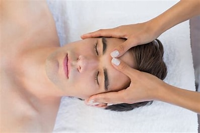
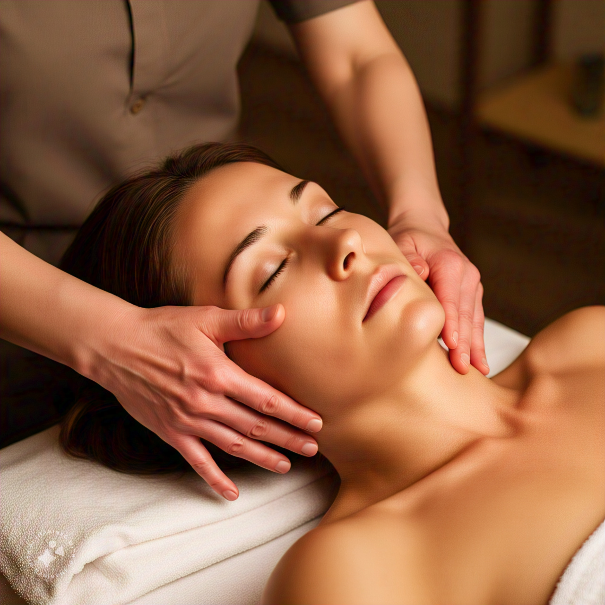

Welcome to Tranquil Shine, your haven for relaxation and self-care. Our website is dedicated to providing you with the finest massaging oils, nail sets, and expert massaging and nail services to help you unwind and rejuvenate.
Imagine sinking into a state of deep relaxation, your muscles soothed, your mind calm, and your spirit lifted. Our carefully curated selection of massaging oils will transport you to a world of serenity, with fragrances and ingredients designed to melt away tension and stress.
Indulge in our nail sets, carefully crafted to provide the ultimate pampering experience. From classic manicures to indulgent spa treatments, our nail services will leave your hands and feet feeling soft, smooth, and pampered.
But that's not all. Our expert massage therapists are dedicated to providing personalized massaging experiences tailored to your specific needs. From Swedish massage to deep tissue, our skilled practitioners will work with you to ease muscle tension, improve circulation, and leave you feeling refreshed and revitalized.
At Tranquil Shine, we believe that self-care is not a luxury, but a necessity. That's why we're committed to providing high-quality products and services that promote relaxation, wellness, and inner peace. So why wait? Browse our selection today and discover a more tranquil you.
Let us help you shine from the inside out. Visit us today and experience the bliss of Tranquil Shine.

.jpeg)
Calf massages target the muscles in the lower legs, specifically the gastrocnemius and soleus muscles. This type of massage can help:
- Relieve tension and pain in the calves
- Improve circulation and reduce swelling
- Ease muscle cramps and spasms
- Enhance flexibility and range of motion
- Promote relaxation and reduce stress
.jpeg)
Foot massages target the feet, toes, and ankles, providing relaxation and relief. Benefits include:
- Relieving tension and pain in the feet and ankles
- Improving circulation and reducing swelling
- Easing stress and promoting relaxation
- Soothing soreness and discomfort
- Exfoliating and softening skin
Back massages target the muscles of the upper, middle, and lower back, providing relaxation and relief. Benefits include:
- Relieving tension, stress, and anxiety
- Easing muscle aches, pains, and stiffness
- Improving posture and reducing muscle spasms
- Enhancing flexibility and range of motion
- Promoting deep relaxation and calmness

Facial massages target the skin, muscles, and lymphatic system of the face, promoting relaxation and rejuvenation. Benefits include:
- Relieving tension and stress in the face, neck, and scalp
- Improving blood flow and circulation, reducing puffiness and dark circles
- Softening and relaxing facial muscles, reducing wrinkles and fine lines
- Enhancing skin tone, texture, and elasticity
- Promoting lymphatic drainage, reducing water retention and sinus pressure
- Calming the mind and promoting deep relaxation